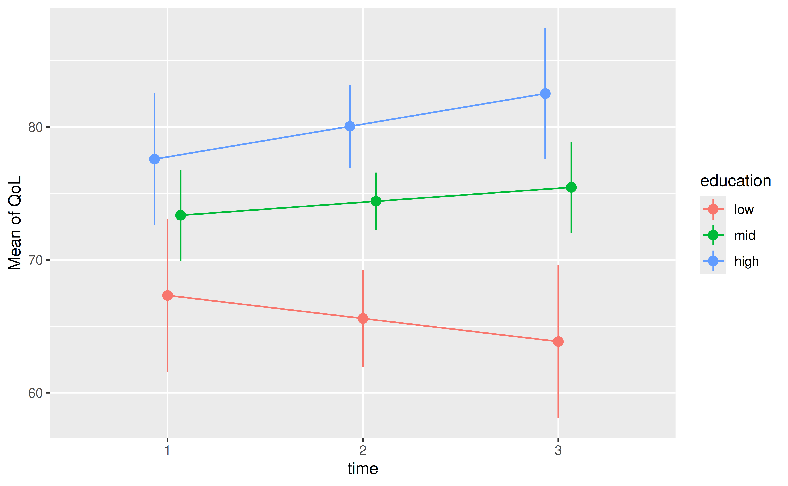
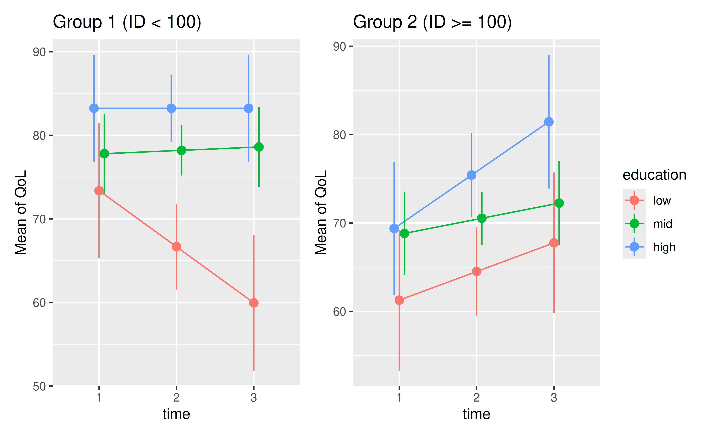

Case Study: Measuring and comparing absolute and relative inequalities in R
Source:vignettes/practical_inequalities.Rmd
practical_inequalities.Rmd1. Introduction: Why Summarize Effects?
In the social sciences, many key variables are nominal (like race or gender) or ordinal (such as education level or social class). Understanding the total impact of these variables can be tricky because they consist of multiple categories. For instance, to determine if educational attainment affects quality of life, we must consider several comparisons, such as low vs. mid, low vs. high, and mid vs. high education levels.
This is where inequality measures come in handy. They are summary statistics that encapsulate the overall effect of a nominal or ordinal variable. The fundamental concept is that a variable’s effect size is proportional to the outcome disparities it generates. As Mize and Han (2025) propose, we can think of the overall effect of a categorical variable in terms of the inequality it produces in the outcome. A variable has a large effect if the outcomes for its different groups are far apart, and a small effect if the outcomes are similar.
This vignette demonstrates how to compute two such summary measures -
absolute inequality and relative
inequality - using the modelbased package in R,
which is part of the easystats ecosystem.
2. The modelbased Package and the Example
The modelbased package provides a consistent and
easy-to-use framework for obtaining model-based predictions, means,
contrasts, and slopes. We will use its functions to calculate inequality
measures.
Example Data: Quality of Life for Cancer Patients
We will use the qol_cancer dataset, which is included in
the parameters package. This dataset contains information
on the Quality of Life (QoL) for patients with prostate cancer, measured
at three different time points. It also includes the patients’ education
level, a key socioeconomic variable.
Our goal is to compute absolute and relative inequality measures for
the education variable to understand its overall impact on
patients’ QoL.
# Load the data
data(qol_cancer)
# The 'ID' variable should be a factor for the model, but we'll make it numeric
# for a later example of splitting the data.
qol_cancer$ID <- as.numeric(qol_cancer$ID)
head(qol_cancer)
#> ID QoL time age phq4 hospital education
#> 1 1 41.66667 3 -3.6 7.16 1 mid
#> 2 1 41.66667 1 -3.6 8.55 1 mid
#> 3 1 33.33333 2 -3.6 3.28 1 mid
#> 4 9 83.33333 1 1.4 -2.45 1 mid
#> 5 9 83.33333 2 1.4 -1.72 1 mid
#> 6 9 83.33333 3 1.4 -1.84 1 mid3. Modeling and Visualizing the Data
We begin by fitting a linear model to predict Quality of Life
(QoL) based on time, education,
and their interaction. This allows the effect of education to vary over
time.
# Fit a linear model
m <- lm(QoL ~ time * education, data = qol_cancer)Before calculating inequality, let’s visualize the estimated marginal means from our model. This plot shows how the average QoL changes over time for each education level. We can see clear gaps between the groups.
# Get estimated marginal means for each combination of time and education
p <- estimate_means(m, by = c("time", "education"))
# Plot the means
plot(p)
The plot shows that individuals with higher education report a higher QoL, and these gaps appear to widen over time. Our inequality measures will quantify this “average gap.”
4. Absolute Inequality
For categorical predictors with only two levels, like low vs. high income groups or male vs. female sex, the absolute inequality is straightforward to compute: it’s the difference between the estimated predictions for the two levels (simple pairwise comparison). However, for nominal or ordinal variables with multiple levels, we need to consider all pairwise differences.
The advantages of the modelbased package become most
apparent when working with predictors that have more than two
levels. In this case, the absolute inequality is
the average of all absolute differences between the predicted outcomes
for each pair of groups.
It answers the question:
“On average, how many units does the outcome differ between any two education groups?”
Pairwise Contrasts
First, let’s look at the simple pairwise differences, averaged across the three time points.
# Estimate the average difference between each pair of education levels
estimate_contrasts(m, contrast = "education")
#> Marginal Contrasts Analysis
#>
#> Level1 | Level2 | Difference (CI) | p
#> ----------------------------------------------
#> mid | low | 8.82 (4.58, 13.06) | <0.001
#> high | low | 14.46 (9.65, 19.27) | <0.001
#> high | mid | 5.64 (1.83, 9.44) | 0.004
#>
#> Variable predicted: QoL
#> Predictors contrasted: education
#> Predictors averaged: time (2)
#> p-values are uncorrected.This table shows three specific comparisons. To get a single summary measure, we can compute the mean of these differences.
Calculating Absolute Inequality
The estimate_contrasts() function can directly compute
the absolute inequality by setting
comparison = "inequality". This calculates the mean of the
absolute values of all pairwise differences.
# Compute the absolute inequality for the 'education' variable
estimate_contrasts(m, contrast = "education", comparison = "inequality")
#> Marginal Inequality Analysis
#>
#> Parameter | Mean Difference (CI) | p
#> -----------------------------------------
#> education | 9.64 (6.44, 12.84) | <0.001
#>
#> Variable predicted: QoL
#> Predictors contrasted: education
#> p-values are uncorrected.Interpretation: The mean difference (absolute
inequality) is 9.64. This means that, on average, the
Quality of Life score differs by 9.64 points between any two randomly
chosen education levels, after accounting for time. The small p-value
(p < .001) indicates that this overall inequality is
statistically significant.
5. Relative Inequality
Relative inequality (or the inequality ratio) is the average of the ratios of predicted outcomes between all pairs of groups.
It answers the question:
“On average, by what factor does the outcome differ between any two education groups?”
This is particularly useful when the scale of the outcome is not intrinsically meaningful or when comparing effects across different outcomes.
Pairwise Ratios
First, let’s look at the pairwise ratios. The interpretation is as follows: people with a middle educational level have a QoL score that is, on average, 1.13 times higher than those with a low education level. High educated individuals have a QoL score that is even 1.22 times higher compared to those with low education, while the difference between middle and high education is 1.08 times. All differences are statistically significant.
# Estimate the ratio of means for each pair of education levels
estimate_contrasts(m, contrast = "education", comparison = ratio ~ pairwise)
#> Marginal Contrasts Analysis
#>
#> Level1 | Level2 | Ratio (CI) | p
#> --------------------------------------------
#> mid | low | 1.13 (1.06, 1.21) | <0.001
#> high | low | 1.22 (1.14, 1.30) | <0.001
#> high | mid | 1.08 (1.02, 1.13) | 0.005
#>
#> Variable predicted: QoL
#> Predictors contrasted: education
#> Predictors averaged: time (2)
#> p-values are uncorrected.Calculating the Inequality Ratio
To summarize these information and to calculate the relative
inequality, we set comparison = "inequality_ratio".
# Compute the relative inequality (inequality ratio)
estimate_contrasts(m, contrast = "education", comparison = "inequality_ratio")
#> Marginal Inequality Analysis
#>
#> Parameter | Mean Ratio (CI) | p
#> --------------------------------------
#> custom | 1.14 (1.09, 1.20) | <0.001
#>
#> Variable predicted: QoL
#> Predictors contrasted: education
#> p-values are uncorrected.Interpretation: The mean ratio (relative inequality) is 1.14. This means that, on average, the QoL score is 1.14 times higher (or 14% higher) when comparing a higher education group to a lower one.
6. Comparing Inequalities Across Groups and Time
A powerful application of these measures is to compare how inequality differs across different subgroups or conditions.
Comparing Inequality Across Subgroups
Let’s randomly split our data into two groups based on patient
ID to simulate comparing inequality between, for example,
two different treatment centers or demographic groups.
# Split data and fit separate models
m1 <- lm(QoL ~ time * education, data = data_filter(qol_cancer, ID < 100))
m2 <- lm(QoL ~ time * education, data = data_filter(qol_cancer, ID >= 100))
# Visualize the patterns in each group
p1 <- plot(estimate_means(m1, by = c("time", "education"))) +
ggplot2::theme(legend.position = "none") +
ggplot2::labs(title = "Group 1 (ID < 100)")
p2 <- plot(estimate_means(m2, by = c("time", "education"))) +
ggplot2::labs(title = "Group 2 (ID >= 100)")
# Show plots side-by-side
p1 + p2
The visual gap between education levels appears larger in Group 1. Let’s confirm this by calculating the absolute inequality for each group.
# Absolute inequality in Group 1
estimate_contrasts(m1, contrast = "education", comparison = "inequality")
#> Marginal Inequality Analysis
#>
#> Parameter | Mean Difference (CI) | p
#> -----------------------------------------
#> education | 11.05 (6.72, 15.38) | <0.001
#>
#> Variable predicted: QoL
#> Predictors contrasted: education
#> p-values are uncorrected.
# Absolute inequality in Group 2
estimate_contrasts(m2, contrast = "education", comparison = "inequality")
#> Marginal Inequality Analysis
#>
#> Parameter | Mean Difference (CI) | p
#> ----------------------------------------
#> education | 7.27 (2.66, 11.89) | 0.002
#>
#> Variable predicted: QoL
#> Predictors contrasted: education
#> p-values are uncorrected.As suspected, the absolute inequality in QoL due to education is larger in Group 1 (Mean Difference = 11.05) than in Group 2 (Mean Difference = 7.27). This demonstrates how these measures can be used to formally test for differences in inequality across populations.
It is also possible to compare the absolute inequalities across groups directly:
# create a new variable to distinguish groups
qol_cancer$grp <- as.factor(ifelse(qol_cancer$ID < 100, "Group 1", "Group 2"))
# fit a model with the group variable
m <- lm(QoL ~ time * education * grp, data = qol_cancer)
# Estimate the absolute inequality for each group
estimate_contrasts(
m,
contrast = "education",
by = "grp",
comparison = "inequality"
)
#> Marginal Inequality Analysis
#>
#> Mean Difference (CI) | p | grp
#> ---------------------------------------
#> 11.05 (6.75, 15.34) | <0.001 | Group 1
#> 7.27 (2.62, 11.93) | 0.002 | Group 2
#>
#> Variable predicted: QoL
#> Predictors contrasted: education
#> p-values are uncorrected.We can even test if the difference in absolute inequality between the
two groups is statistically significant. To do so, we perform a
pairwise comparison of the absolute inequalities across groups,
i.e. we simply replace comparison = "inequality" with
comparison = "inequality_pairwise" in the
estimate_contrasts() function:
# Estimate the absolute inequality for each group, and compare them
estimate_contrasts(
m,
contrast = "education",
by = "grp",
comparison = "inequality_pairwise"
)
#> Marginal Inequality Analysis
#>
#> Parameter | Mean Difference (CI) | p
#> ------------------------------------------------
#> Group 1 - Group 2 | 3.77 (-2.56, 10.11) | 0.243
#>
#> Variable predicted: QoL
#> Predictors contrasted: education
#> p-values are uncorrected.As can be seen, the mean difference in absolute inequality between the two groups is 3.77, however, the p-value indicates that this difference is not statistically significant - the absolute inequalities in education are not significantly different between the two groups.
The same can be done for relative inequality:
# Estimate the relative inequality for each group
estimate_contrasts(
m,
contrast = "education",
by = "grp",
comparison = "inequality_ratio"
)
#> Marginal Inequality Analysis
#>
#> Mean Ratio (CI) | p | grp
#> ------------------------------------
#> 1.16 (1.09, 1.23) | <0.001 | Group 1
#> 1.11 (1.03, 1.19) | <0.001 | Group 2
#>
#> Variable predicted: QoL
#> Predictors contrasted: education
#> p-values are uncorrected.
# and compare if the difference in relative inequality is statistically significant
estimate_contrasts(
m,
contrast = "education",
by = "grp",
comparison = "inequality_ratio_pairwise"
)
#> Marginal Inequality Analysis
#>
#> Parameter | Mean Ratio Difference (CI) | p
#> ------------------------------------------------------
#> Group 1 - Group 2 | 0.05 (-0.05, 0.16) | 0.334
#>
#> Variable predicted: QoL
#> Predictors contrasted: education
#> p-values are uncorrected.The mean difference in the relative inequality is 0.05, indicating that the QoL in Group 1 is, on average, 5% higher than in Group 2 when comparing education levels. The p-value suggests this difference is not statistically significant.
Tracking Inequality Over Time
Our model includes an interaction between time and
education, suggesting the inequality might be changing. We
can examine the trend in inequality by contrasting the slopes
of the time variable across the different
education groups. The results below are essentially shown
in the two plots above.
# Estimate the slope of 'time' for each education level in the first group
# see also left panel of the plot above
estimate_slopes(m1, trend = "time", by = "education")
#> Estimated Marginal Effects
#>
#> education | Slope (CI) | p
#> ------------------------------------------
#> low | -6.71 (-12.99, -0.44) | 0.036
#> mid | 0.40 ( -3.29, 4.09) | 0.831
#> high | 0.00 ( -4.95, 4.95) | > .999
#>
#> Marginal effects estimated for time
#> Type of slope was dY/dX
# And for the second group
# see also right panel of the plot above
estimate_slopes(m2, trend = "time", by = "education")
#> Estimated Marginal Effects
#>
#> education | Slope (CI) | p
#> ---------------------------------------
#> low | 3.24 (-2.93, 9.41) | 0.302
#> mid | 1.72 (-1.95, 5.38) | 0.358
#> high | 6.04 ( 0.19, 11.90) | 0.043
#>
#> Marginal effects estimated for time
#> Type of slope was dY/dX
# or integrated in the same call
estimate_slopes(m, trend = "time", by = c("education", "grp"))
#> Estimated Marginal Effects
#>
#> education | grp | Slope (CI) | p
#> -------------------------------------------------------
#> low | Group 1 | -6.71 (-12.92, -0.50) | 0.034
#> mid | Group 1 | 0.40 ( -3.25, 4.06) | 0.830
#> high | Group 1 | 1.42e-10 ( -4.92, 4.92) | > .999
#> low | Group 2 | 3.24 ( -2.98, 9.46) | 0.306
#> mid | Group 2 | 1.72 ( -1.98, 5.41) | 0.362
#> high | Group 2 | 6.04 ( 0.14, 11.94) | 0.045
#>
#> Marginal effects estimated for time
#> Type of slope was dY/dXIn Group 1, the QoL for the ‘low’ education group is decreasing over time (Slope = -6.71), while it is stable for the ‘mid’ and ‘high’ groups. This suggests the gap is widening. We can quantify this change in inequality directly.
# Calculate the inequality in the *slopes* of time
# This tells us if the rate of change in QoL is unequal across groups
estimate_contrasts(
m,
contrast = "time",
by = c("education", "grp"),
comparison = "inequality",
integer_as_continuous = TRUE
)
#> Marginal Inequality Analysis
#>
#> Parameter | Mean Difference (CI) | p
#> -------------------------------------------------
#> education: Group 1 | 4.74 (-0.05, 9.53) | 0.052
#> education: Group 2 | 2.88 (-1.75, 7.51) | 0.222
#>
#> Variable predicted: QoL
#> Predictors contrasted: time
#> p-values are uncorrected.
In the above example, we set integer_as_continuous = TRUE
to ensure that the time variable is treated as continuous, allowing us
to calculate the slope differences correctly. By default, numeric
variables with only a few integer values are treated as “discrete”
(ordinal-alike), which would rather calculate contrasts for each time
point and not the slope of a continuous time variable. See
also documentation
of estimate_contrasts() for more details, especially
the ... argument and the examples.
The mean difference in slopes is 4.74 in Group 1. This indicates that the rate of change in QoL differs, on average, by 4.74 points per unit of time between any two categories of the education groups. Inequalities are smaller in Group 2 (Mean Difference = 2.88), suggesting a more uniform change over time.
To test if the difference in slopes is statistically significant, we can perform a pairwise comparison of the slopes across groups:
# Calculate the pairwise inequality in the *slopes* of time
estimate_contrasts(
m,
contrast = "time",
by = c("education", "grp"),
comparison = "inequality_pairwise",
integer_as_continuous = TRUE
)
#> Marginal Inequality Analysis
#>
#> Parameter | Mean Difference (CI) | p
#> ------------------------------------------------
#> Group 1 - Group 2 | 1.86 (-4.82, 8.53) | 0.585
#>
#> Variable predicted: QoL
#> Predictors contrasted: time
#> p-values are uncorrected.As we see, the difference in average slopes (i.e. we have a pairwise comparison of absolute inequalities of trends or slopes) is not statistically significant.
Is the gap widening or narrowing?
Inequalities are calculated by means of absolute
differences. This means, while we can see whether the change is stronger
or weaker across groups, we cannot directly see if the gap is widening
or narrowing, because the absolute difference is always positive. To
determine whether the gap is widening or narrowing, we can look at the
slopes of the education variable across time using
estimate_slopes().
7. Conclusion
The modelbased package offers a powerful and intuitive
way to move beyond simple pairwise comparisons and summarize the
holistic effect of categorical variables. By quantifying
absolute and relative inequalities, researchers
can:
- Obtain a single, interpretable effect size for a nominal or ordinal predictor.
- Formally test whether this overall effect is statistically significant.
- Compare the magnitude of inequality across different groups, models, or over time.
This approach aligns statistical practice with the theoretical concept of group-based disparities, providing a clearer and more comprehensive understanding of how social categories shape outcomes.
Formula interface
The modelbased package also allows you to compute these
inequalities using a formula interface for the comparison
argument. The following table summarizes the available options for
computing inequalities using the estimate_contrasts()
function with a formula interface:
| String option | Formula |
|---|---|
"inequality" |
~inequality |
"inequality_pairwise" |
inequality ~ pairwise |
"inequality_ratio" |
ratio ~ inequality |
"inequality_ratio_pairwise" |
ratio ~ inequality + pairwise |
Grouping variables are usually specified using the by
argument. Additionally, these can also be specified in the formula
interface, for example, ~inequality | group1 or
inequality ~ pairwise | group1 + group2.